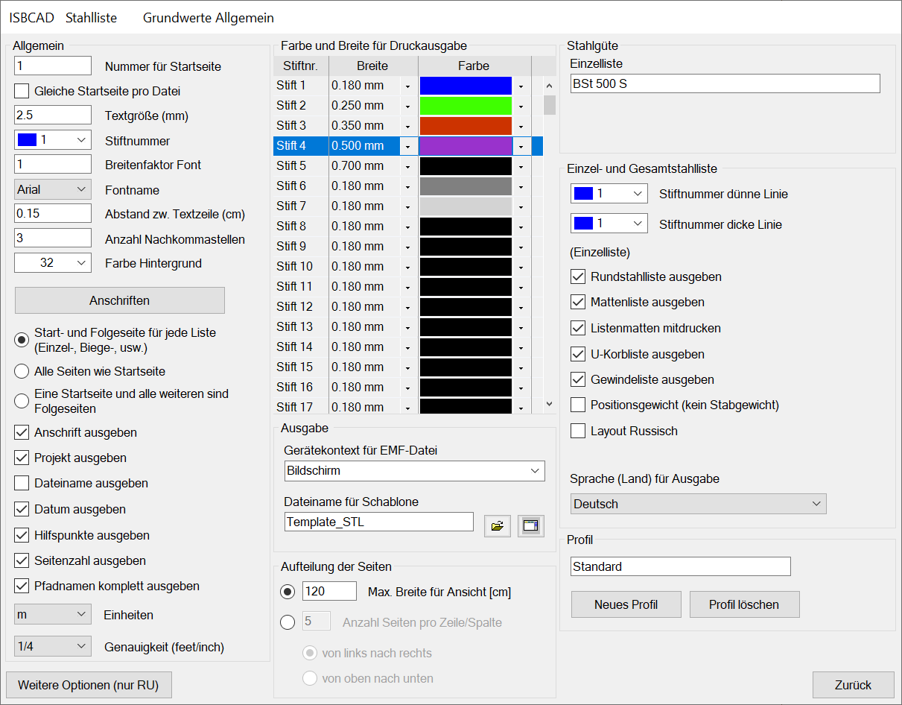
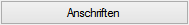

")
")
 /
/ 
Angaben zu der Gestaltung von Stahllisten.
Optionen im Dialog "Grundwerte Allgemein"
 |
Allgemein
Nummer für Startseite Hier können Sie eine beliebige Startnummer eingeben. Gleiche Startseite pro Datei Wenn mehr als eine Stahlliste gewählt wurde, werden die Seiten jeder Datei von der ersten zur letzten fortlaufend durchnummeriert. Textgröße (mm) Größe der Listentexte. Stiftnummer Wählen Sie einen Stift für die Texte der Stabstahllisten. Für die anderen Listen werden die Stifte gesondert angegeben! Breitenfaktor Font Geben Sie einen Faktor für die Schriftbreite an. Fontname Wählen Sie den Schrifttyp für die Tabelleneinträge. Abstand zw. Textzeile (cm) Geben Sie einen Wert für den Zeilenabstand an.
Anzahl der Nachkommastellen für die Gewichtsangaben in allen Listen sowie für die Maße in der Schneideskizze. Farbe Hintergrund Wählen Sie aus der Tabelle "Farbe und Breite für Druckausgabe" die Farbe für die Bildschirmdarstellung. Gedruckt wird immer auf weißem Hintergrund.  Ruft den Dialog Anschriften auf. Die markierte Anschrift wird bei der Ausgabe der Stahlliste für den Listenkopf verwendet. Start- und Folgeseiten für jede Liste (...) Jede Listenart beginnt mit der Startseite und für die Fortsetzung werden Folgeseiten angehängt. Falls kein Layout für Folgeseiten definiert wurde, wird jede Seite mit dem Layout der Startseite ausgegeben. Alle Seiten wie Startseite Es werden alle Seiten mit dem Layout der Startseite ausgegeben. Eine Startseite und alle weiteren sind Folgeseiten Nur die erste Seite wird als Startseite und alle anderen als Folgeseiten ausgegeben. Anschrift ausgeben Wenn auf der Stahllistenvorlage „Büroname“ usw. als Textvariable vorhanden ist, wird bei dem Setzen des Hakens der Text in der Stahlliste generiert. Projekt ausgeben Setzen Sie einen Haken in die Checkbox, um Textvariablen wie „Projekt“, „Bauwerk“ usw. auswählen zu können. Dateiname ausgeben Setzen Sie einen Haken in die Checkbox, um den Dateinamen in der Gesamtstahlliste auszugeben. Datum ausgeben Setzen Sie einen Haken in die Checkbox, um die Variable „Datum“ auswählen zu können. Hilfspunkte ausgeben Setzen Sie einen Haken, wenn die Hilfspunkte, die den Seitenbereich begrenzen, ausgegeben werden sollen. Seitenzahl ausgeben Setzen Sie einen Haken in die Checkbox, um die Textvariablen „Seite oben“, „Seite unten“ auswählen zu können. Pfadnamen komplett ausgeben Wenn „Dateiname ausgeben“ gewählt ist, kann durch Auswahl der komplette Pfad der Zeichnung angegeben werden. Siehe: Stahllistenvorlage erzeugen Längeneinheiten Einheiten Auswahl der Längeneinheiten in der Stahlliste (m, mm, feet, inch). Genauigkeit (feet/inch) Angabe des Bruchs hinter der Länge (z. B. 51'-6 ¼" Fuß (ft)). |
Farbe und Breite für Druckausgabe
Farbe Zeigt die für den Stift gewählte Farbe. Sie können dem Stift eine andere Farbe zuweisen, indem Sie in das Farbfeld klicken oder neben dem Farbfeld einen Farbauswahl-Dialog mit
Breite Klicken Sie in das Feld, um die Breite direkt einzugeben oder klicken Sie auf |


Gerätekontext für EMF-Datei Hier können Sie die Auflösung aus den eingerichteten Druckern (i.d.R. 600 dpi) oder vom Bildschirm (72 dpi) übernehmen. Diese Einstellung gilt nur, wenn Sie die Ausgabe in Form einer EMF-Datei vornehmen. Dateiname für Schablone Wählen Sie eine Stahllistenvorlage, die für das Erstellen der Stahlliste genutzt werden soll.
|
Einstellungen für die Ablage der Stahlliste auf der Zeichnung. Max. Breite für Ansicht [cm] Legen Sie eine Breite fest, auf der eine bestimmte Anzahl Seiten nebeneinander passt. Z. B. passen auf 100 cm 4 DIN A4 Seiten, auf 105 cm 5 Seiten. Anzahl Seiten pro Zeile/Spalte Geben Sie die Anzahl der Seiten an, die entweder nebeneinander (von links nach rechts) bzw. untereinander (von oben nach unten) passen. |
Stahlgüte
Einzelliste Ergänzungstext zur „Rundstahl-Stückliste“ und zur Überschrift der Gesamtlisten. |
Einzel- und Gesamtstahlliste
Stiftnummer dünne Linie In der Stabstahlliste werden die Zeilen der Spaltenüberschriften durch eine Linie von der Liste abgesetzt. Geben Sie hierfür die Stiftnummer ein. Stiftnummer dicke Linie Unter die Zeile des Gesamtgewichts wird eine Linie mit dieser Strichbreite gezogen. Rundstahlliste ausgeben Wählen Sie durch Setzen eines Hakens vor der Listenart, ob diese Liste in der Ausgabe erscheinen soll oder nicht. Üblicherweise wird diese Auswahl getroffen. Sie erhalten dadurch die Zusammenstellungen nach Durchmessern getrennt, sowie das Gesamtgewicht. Wenn Sie z. B. darauf verzichten und nur die Biegeliste erzeugen, wird hier kein Haken gesetzt. Mattenliste ausgeben Gibt eine Liste mit allen Mattenpositionen, ihren Abmessungen und Gewichten aus. Im Allgemeinen ist diese Auswahl überflüssig, da die Schneideskizze alle Angaben der Mattenliste enthält und darüber hinaus auch eine Zusammenstellung durchführt. Listenmatten mitdrucken Wenn Listenmatten vorhanden sind, wird hierfür eine Zusatzliste erzeugt. Diese Liste enthält Daten über Länge, Breite und Gewicht. Es wird eine Liste erzeugt, in der U-Korb-Typ, Gesamtlänge und Gesamtgewicht angegeben werden. Wenn auf der Zeichnung keine Matten verlegt sind, wird keine Schneideskizze erzeugt. Haben Sie zur Unterstützung der oberen Bewehrung Unterstützungskörbe [Matten | U-Korb] gewählt, müssen Sie diese Auswahl treffen. Gewindeliste ausgeben Wenn auf der Zeichnung Stabstahlformen mit mechanischen Verbindungsmitteln (z. B. SAS 500 Annahütte) verbunden werden, wird durch diese Liste eine separate Zusammenstellung erzeugt, die direkt an den Lieferanten / Hersteller geschickt werden kann. Positionsgewicht (kein Stabgewicht) In der Rundstahlstückliste wird eine Spalte mit den Gewichten der Einzelstäbe angezeigt. Wenn Sie den Haken in das Kästchen setzen, wird stattdessen das Positionsgewicht berechnet. Layout Russisch Die Gestaltung der Stahlliste erfolgt nach russischem Muster. Sprache (Land) für Ausgabe Auswahl einer Sprachregion. Die Texte innerhalb des Listenbereiches werden in der gewählten Sprache ausgegeben. |
Unter dem Begriff „Profil“ werden Stile für die Gestaltung der Listen verstanden. Sie können beliebig viele Stahllistenprofile anlegen. Das hat den Vorteil, dass Sie für die Ausgabe der Liste auf Drucker ein Profil mit der Ausgabe der Listenköpfe verwenden können, und bei der Ausgabe auf dem Plan ein Profil ohne Büroanschrift, Projektangaben etc. Das Profil wählen Sie im Dialog Stahlliste aus. Neues Profil Nachdem Einstellungen verändert wurden, können diese in einem Stahllistenprofil gespeichert werden. Geben Sie in dem Eingabefeld einen Namen für das Stahllistenprofil an. Wählen Sie z. B. die Bezeichnung „Drucker“ für die Einstellung mit Ausgabe der „Anschrift-“ und „Projektangaben“, die Bezeichnung „Plan“ deutet auf die Einstellung ohne Listenkopf hin. Drücken Sie auf die Schaltfläche, um das Ausgabeprofil in die Liste zu übernehmen. Profil löschen Das angezeigte Profil wird gelöscht. |
Zugehörige Referenzen: